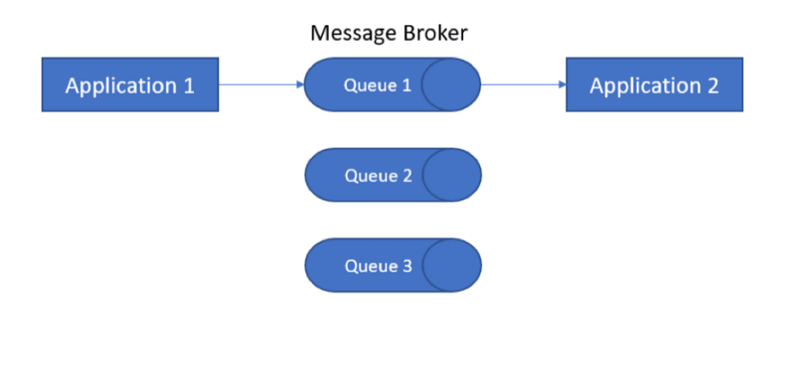
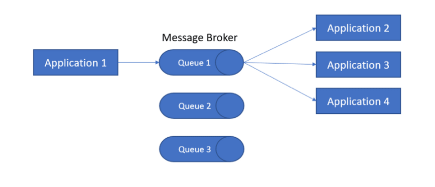

原文地址：Redis vs Kafka vs RabbitMQ
原文作者：Mertcan Arguç
译者：maybelence
当在微服务架构中需要使用异步通信时，最常见的通信手段就是使用消息代理,代理的作用是让消息在系统的管理和监控下，确保不同服务之间能够进行可靠且稳定的通信。你可以为你的服务选择合适的消息代理框架，因为每种框架的规模和数据能力都不一样。这篇文件将会展示当下三种比较流行的消息代理框架的比较结果：Redis、Kafka、RabbitMQ。
微服务通信：同步与异步
在微服务中有两种常见的通信方式：同步与异步。在同步通信方式中，调用端在发起下一条请求之前需要等待响应，它作为 HTTP 之上的 REST 协议运行。而异步通信是在发起下一条请求时，不需要等待当前请求响应。在分布式系统中有些场景一般都是采用的异步通信，对这些消息的管理则是采用消息代理框架。
在选择通信类型时应该考虑多种因素，例如如何构建微服务、项目环境、延迟、规模、依赖关系和通信的目的。
异步通信在引入和使用上要比同步通信更加复杂，并且需要在当前技术栈中添加更多组件，但在微服务中引入异步通信还是利大于弊。
异步通信的优点
通过异步通信的定义来看，异步通信是非阻塞的。并且他还支持比同步操作更好的线程缩放。其次，在微服务崩溃的情况下，异步通信机制提供了各种恢复技术，并能更好地处理与崩溃有关的错误。此外，当使用代理而不是 REST 协议进行通信时，接收通信的几个服务并不需要相互了解。甚至可以在旧服务上线很久之后引入新服务。即可以更好的实现解耦。
最后，选择异步操作可以可以提高在未来创建注册中心、监控中心、负载平衡甚至策略执行器的能力。这将为代码和系统构建提供更灵活性、高扩展性等功能特性。
选择合适的消息代理
异步通信通常是通过消息代理进行管理。当然还有其他方式，例如 aysncio，但它们相对而言更加冷门而且使用场景受限颇多。
当为异步操作选择代理时，应该考虑以下几个方面：
- 代理规模 — 系统中每秒发送的消息数
- 数据持久性 — 恢复消息的能力
- 消费者能力 — 代理是否能够管理一对一和/或一对多的消费者
一对一

一对多

下面我们来对比一下题中提及的三种消息代理哪种更好一点。
消息代理比较
RabbitMQ (AMQP)
规模：根据配置和资源，这里的大约是每秒 5w 条消息。
持久性：支持持久和瞬态消息。
消费者能力：支持一对一和一对多。
RabbitMQ 于 2007 年发布，是最早创建的通用消息代理之一。它是一个开源的，通过实现高级消息队列协议 (AMQP) 通过点对点和发布订阅方法传递消息。它旨在支持复杂的路由逻辑。
有一些托管服务允许将其用作 SaaS，但它不是本地主要云提供商堆栈的一部分。 RabbitMQ 支持大部分主流编程语言，包括 Python、Java、.NET、PHP、Ruby、JavaScript、Go、Swift 等。
在持久模式下会出现一些性能问题。
Kafka
规模：每秒大约可以发送 100w 条消息。
持久性：支持持久性。
消费者能力：只支持一对多。
Kafka 由 Linkedin 于 2011 年创建，用于处理高吞吐量、低延迟的处理。作为分布式流媒体平台，Kafka 复制了发布-订阅服务。它提供数据持久性并存储记录流，使其能够交换质量消息。
Kafka 在 Azure、AWS 和 Confluent 上管理过 SaaS。他们都是 Kafka 项目的创造者和主要贡献者。 Kafka 支持大部分主流编程语言，包括 Python、Java、C/C++、Clojure、.NET、PHP、Ruby、JavaScript、Go、Swift 等。
Redis
规模：每秒大约可以发送 100w 条消息。
持久性：不具备，因为它其实只是一个内容数据存储。
消费者能力：支持一对一和一对多。
Redis 与其他消息代理有点不同。 Redis 的核心是一种内存数据存储，可用作高性能键值存储或消息代理。另一个区别是 Redis 没有持久性，而是将其内存转储到磁盘/数据库中。它也非常适合实时数据处理。
最初，Redis 并不是一对一和一对多的。然而，自从 Redis 5.0 引入了 pub-sub，功能得到了提升，一对多成为了一个真正的选择。
消息代理结合使用场景
本文介绍了 RabbitMQ、Kafka 和 Redis 的一些特性。这三者都是同类中的佼佼者，但像上文提及的，它们的运作方式截然不同。所以需要我们根据不同使用场景使用正确的消息代理。
短保留消息:Redis
Redis 的内存数据库几乎完美适用于不需要持久性的短消息消息的用例。因为它提供了极快的服务和内存中的功能，Redis 是短保留消息的完美候选者，在这种情况下持久性并不那么重要。由于限制和旧的 pub-sub 功能, Redis 流在 5.0 中的发布，它也是一对多用例的候选者。
高吞吐量：Kafka
Kafka 是一个高吞吐量的分布式队列，专为长时间存储大量数据而构建。 Kafka 非常适合需要持久性的一对多用例。
复杂路由：RabbitMQ
RabbitMQ 是一个较老但成熟的代理，具有许多支持复杂路由的特性和功能。甚至在要求的速率不高（几万个msg/sec以上）的情况下，它甚至可以支持复杂的路由通信。
考虑您软件的技术栈
当然，最后的考虑因素还是当前的软件所使用的技术栈。如果一个相对简单的集成过程而且不想在技术栈中维护不同的代理，则更倾向于使用当前技术栈已经支持的代理。
例如，如果在 RabbitMQ 之上的系统中将 Celery 用于任务队列，那么您将有动力使用 RabbitMQ 或 Redis，而不是使用不受支持且需要重写的 Kafka。
最重要的是要记住，每种框架都有自己的优点和缺点，所以需要结合当前多种因素选择合适的框架。

...
...
Copyright by @maybelence.